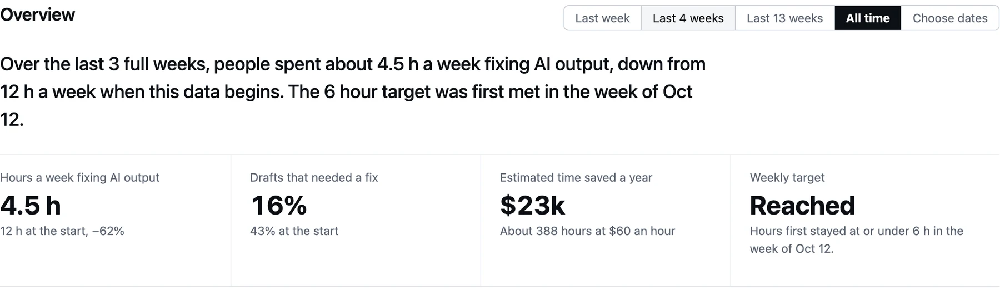
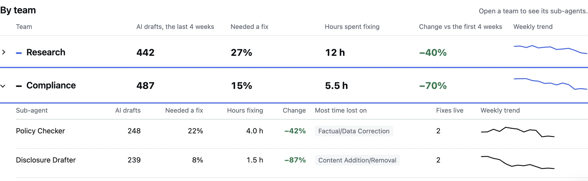
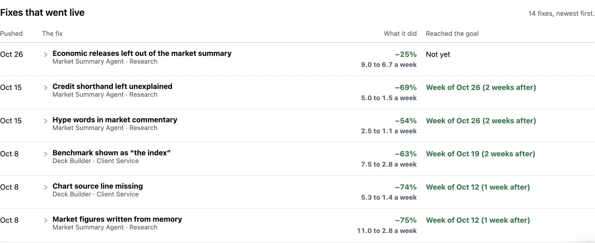
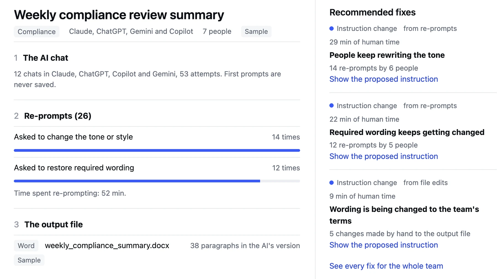
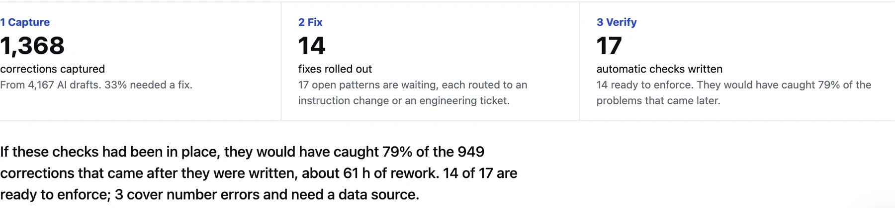

The best signal of what AI can’t do is how employees work around it.
Farfield captures what employees fix after AI responds and turns it into a continuous feedback loop, so your company’s AI improves around how your people actually work.
The problem
Firms can see what AI does. Not what their employees fix.
Every day, employees re-prompt AI tools and quietly correct the output in Excel, PowerPoint, and email. That work shows up in no dashboard, so the next person fixes the same mistake again, and the people building the tools never hear about it.
- 1AI builds a spreadsheet on the wrong assumptions.
- 2An employee re-prompts three times.
- 3Then fixes the rest by hand.
- 4Ten others make the same correction. No one sees the pattern.
Companies are scaling AI faster than they’re learning from the employees using it.
How it works
Close the loop between how employees use AI and how companies improve it.
Capture
Re-prompts in AI chat tools, and the edits between what the AI produced and what was submitted in Excel, PowerPoint, and email. Designed so employees don’t change how they work.
Find patterns
Recurring corrections grouped across employees and teams, with the hours they cost, for every workflow.
Reveal what AI is missingThe core insight
The company-specific knowledge behind each pattern: your terminology, required wording, risk tolerances, and data. Written as a proposed fix.
Improve and verify
A team lead approves an instruction change, or engineering receives a ready-to-implement ticket with the evidence. Every past correction becomes a test the fix must pass, and Farfield tracks whether rework falls.
Over time, a company’s own corrections become a test suite for its AI workflows.
The product
See where the hours go, and whether they’re falling.
A working prototype, running on sample data and our own usage.
For operational leaders
One view of AI rework, by team
How many hours a week go to fixing AI output, which teams and agents it comes from, and how that is trending.




Impact over time
Know when each fix shipped, and what it changed
Every fix that goes live is marked on the timeline, with the drop in the corrections it targeted and when the goal was reached.
For employees
Every fix becomes evidence
A workflow shows the first prompt, the re-prompts, the output file, and exactly what the employee changed by hand, plus the time it took. Other people’s wording appears only as themes.



The fix queue
Ranked by time lost, routed to whoever can fix it
Farfield proposes the change: an instruction a team lead can approve, or an engineering ticket with the evidence attached.
Verification
A fix that works stays fixed
Every correction is saved as a test. Before a fix goes live, Farfield backtests it against what went wrong before, so an old mistake can’t quietly come back.

Why Farfield
Other tools watch the AI. Farfield measures the cleanup.
AI observability
Tracing and prompt-management toolsTraces prompts, tool calls, errors, and latency. Stops when the agent returns its output.
Usage analytics
Adoption and ROI dashboardsCounts adoption, spend, and tokens. Can look healthy even as the cleanup grows.
Farfield
What happens after the outputMeasures the corrections employees make, and turns them into the company knowledge AI is missing.
Many of these tools are built for developers. In our conversations, operational teams couldn’t use them to see behavioral or productivity changes in what employees actually produce.
Where we start
High-stakes finance, where a small error is expensive.
AI-generated documents, decks, and emails in finance have to be thoroughly reviewed, because small errors can create material financial, compliance, and operational consequences.
Compliance review
Required wording, disclosures, and policy references that AI keeps getting wrong.
Client deliverables
Summaries, decks, and emails where tone, terminology, and figures must be exact.
Reporting and analysis
Spreadsheets and models where wrong assumptions and numbers get corrected by hand.
Projected AI use-case spending in financial services in 2026, rising to $272.5B by 2029.
Source: IDC Worldwide AI and GenAI Spending Guide, March 2026.The team
We lived this problem from two different desks.
We’ve been friends since high school and are both seniors at Penn. We’re building Farfield full time.
Belle Zou
Operations at Citadel, previously NVIDIA, and a gap semester at an AI search infrastructure startup. At Citadel, Belle built logic that grouped recurring trade-booking corrections and measured their rework cost, helping engineering and operations find root causes across products.
LinkedInCharlotte Tan
Quantitative Investment Strategies at Goldman Sachs, and a gap semester at a VC firm. At Goldman, Charlotte tracked a compliance AI tool’s recurring failures and the rework they created, until the issue reached senior leadership.
LinkedInFounding cohort
Be one of the first teams to close the loop.
We’re opening Farfield to a small founding cohort of teams running AI in finance. Founding partners get first access, shape the product alongside us, and help set the standard for measuring AI rework. Seats are limited, and we review every application personally.
Apply for a founding seat
Investors are welcome too. Choose “Investor” and tell us what you’d like to discuss.